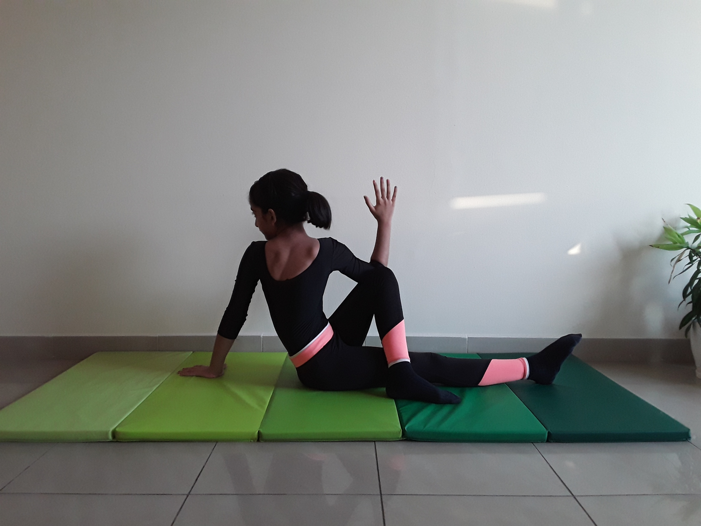

SEATED HALF SPINAL TWIST POSE

Steps to perform Seated Half Spinal Twist Pose
- Sit up on the floor or a folded blanket, with your hands on the floor or blanket behind you for support. Straighten your legs out in front of you.
-
Bend your right knee and place your right foot to the outside of your left knee.
-
Inhale, lengthen your torso, exhale and twist toward your right, either hugging your right knee with your left arm or placing your left upper arm on the outside of your right leg near the knee.
-
Take several breaths here, lifting up through the sternum on the inhale and twisting a little more on the exhale, keeping the upper back wide.
-
Release the twist and try the other side.